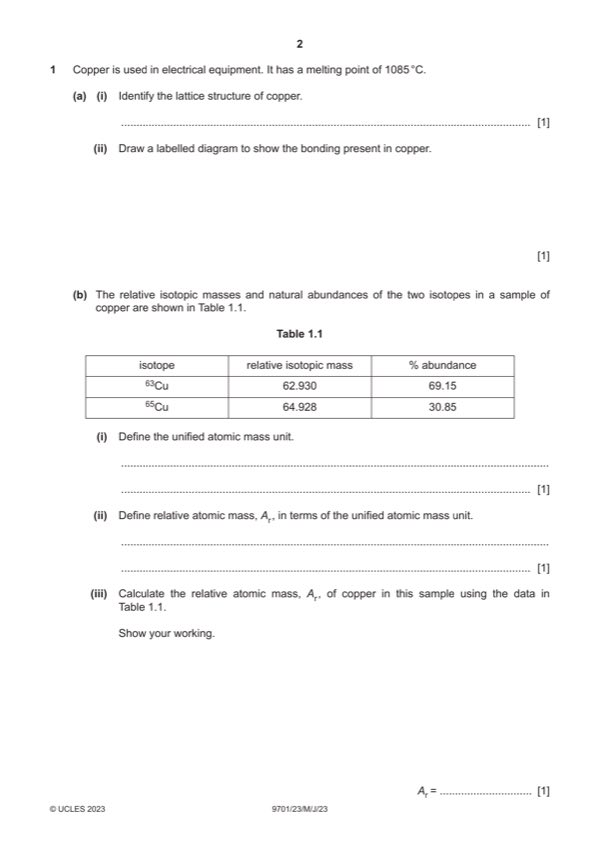

Question 1

Original paper page 2
Part 1(a)(i) — solution
giant metallic 1
Mark points
- Include the ideas shown in the solution above.
Part 1(a)(ii) — solution
Answer: 1 · AND with the circles surrounded by electrons shown as e– / – OR little circles labelled delocalised electrons
- [M1] diagram showing minimum of 4 particles
- circles containing just a + do not have to be labelled
- empty circles / circles with Cu must be labelled + ion / positive ion / cation / Cun+
Mark points
- [M1] diagram showing minimum of 4 particles
- circles containing just a + do not have to be labelled
- empty circles / circles with Cu must be labelled + ion / positive ion / cation / Cun+
Part 1(b)(i) — solution
(the mass of) one twelfth of the mass of a C-12 / 12C atom (or isotope) 1
Mark points
- Include the ideas shown in the solution above.
Part 1(b)(ii) — solution
average mass of the isotopes of an element compared to the unified atomic mass unit 1
Mark points
- Include the ideas shown in the solution above.
Part 1(b)(iii) — solution
- (62.93 69.15) ൊ100 + (64.928 30.85) ൊ100 = 63.55 / 63.546 1
Mark points
- (62.93 69.15) ൊ100 + (64.928 30.85) ൊ100 = 63.55 / 63.546 1
Part 1(c) — solution
63Cu2+ 1
Mark points
- Include the ideas shown in the solution above.
Part 1(d)(i) — solution
2Cu2+ + 4I— 2CuI + I2 1
Mark points
- Include the ideas shown in the solution above.
Part 1(d)(ii) — solution
Cu2+ OR CuSO4 AND copper (species / ion) has gained / taken electron(s) from iodide (ion) 1
Mark points
- Include the ideas shown in the solution above.
Part 1(d)(iii) — solution
- 1s2 2s2 2p6 3s2 3p6 3d9(4s0) 1
Mark points
- 1s2 2s2 2p6 3s2 3p6 3d9(4s0) 1